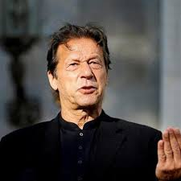

Khan was offered political positions more than a few times during his cricketing career. In 1987, President Zia-ul-Haq offered him a political position in the Pakistan Muslim League (PML) which he politely declined. Khan ended the campaign by addressing a rally of supporters in Islamabad via a video link while lying on a bed at a hospital in Lahore.[204] The last survey before the elections by The Herald showed 24.98 percent of voters nationally planned to vote for his party, just a whisker behind former prime minister Nawaz Sharif's PML-N.